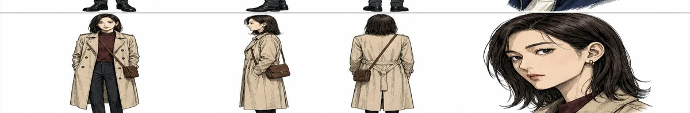

全流程创作体验示例离城之前
离开一座城市之前，三年未联系的前女友重新添加了好友。一个关于重逢、表达与共同选择的爱情故事。

从用户给出的灵感开始
一条好友申请，打开十集故事。
男生准备离开这座城市，晚上和同事去吃宵夜，收到已经三年未联系的前女友的好友添加信息。一个爱情故事，结局留有悬念，做10集内容。
陆川准备离开海汀，到南州开始一份公共交通产品设计工作。周四夜，他在同事送别的宵夜桌上收到三年未联系的前女友许宁的好友申请。许宁看见共同同学群的送别照，以还书为由约见，其实是想再见他。周五的早餐和午饭让两人发现，他们把对方这三年的生活猜错了，也终于谈到分手：当年许宁得到赴洛港半年的交流机会，陆川父亲同期中风，他隐瞒住院的严重程度，又用责怪和“别回来找我”逼她留下；许宁则用“你可以永远待在原地”回击，离开后没有再联系。如今父亲已能独自行走，两人的工作与生活也各自成形。许宁又面临北岸四个月的驻地翻译邀约，这次主动告诉他尚未做出的决定。周六，两人在书店义卖中共同修好一张桌子，学着讲清时间、接受不能随时陪伴；陆川搬走行李，没有用改签或取消新工作要求她表态。晚餐里两人明确道歉，雨中的牵手让彼此确认仍有爱意，但许宁不愿用一夜重逢跳过修复。周日，退租、核账和各自吃午饭让他们练习把真实脆弱说给对方，而不要求对方随时救场。河边长谈时，陆川明确提出重新相爱，许宁答应重新开始，并一起约定及时说清、不用沉默和牺牲记账。他照计划乘坐周日18:40的列车，许宁也保留接受北岸项目的可能。结局：两人的恋爱关系已经重新确认，但两周后在哪座城市见面、未来如何共同生活仍未决定。列车启动后，许宁看着待定日历，开始回复“那我有一个想法”，悬念落在下一次两人共同作出的选择。
故事正文为人工完整创作示范；漫画为已有原创图像示例。案例用于核对内容与流程，不作为一键自动完成、实时成本或生成质量的证明。
人物与视觉身份
先有故事里的人，再有画面中的他。

陆川
产品设计师，周一将在南州入职
克制、习惯独自承担、愿意学习表达

许宁
独立翻译，考虑北岸四个月驻地项目
独立、认真、愿意核对感受
十集完整正文
一集一集，读完这段重逢。
第1集 · 未读的好友申请
场景1 周四22:10 外 海汀·河岸夜食摊（离城倒计时三天）
锅铲敲在铁锅边。陆川把一次性筷子掰开，又将长短不一的两根对齐。同事孟遥举起杯子，祝他到南州工作顺利。桌上有人问新办公室离海远不远，他说不知道，租房合同已经签好，周一入职，周日18:40的车。
孟遥：你安排得真干净，像把一个文件夹拖进另一个文件夹。
陆川：最好连缓存也清掉。
大家笑了。手机在碗边震动，屏幕出现一个三年没见过的名字：许宁。好友申请的附言只有一句：“听说你要走了。方便把我加回来吗？”
陆川的筷子停在半空。上一次看见她的消息，还是三年前那个暴雨夜。她问钥匙放在哪里，他回了门卫室，从此再没联系。
孟遥把烤茄子推给他，发现他脸上的笑没有跟着落下来。
孟遥：我在旧同学群里发了送别照，你没介意吧？只说你换工作。
陆川：没有。她也在那个群里？
孟遥点头，没有探头看他的屏幕。陆川按灭手机，喝了一口已经凉掉的茶。
场景2 周四22:35 外 夜食摊旁的人行道
同事们还在争论谁付账，陆川说去接个电话，走到路灯照不到的树下。他根本没有电话。他打开申请页面，把“通过”旁边那块空白看了很久。
许宁的头像换成了一扇窗，窗台上没有他认识的东西。他曾想过重逢时自己会很从容，会问她过得好吗，现在却连该不该用感叹号都不知道。
他按下通过，输入：“周日走。有事？”看见问号，删掉后半句，重新写：“周日走。你最近好吗？”
许宁很快回复：“还好。我这里有你的一本书，整理书架才翻出来。你要不要拿回去？”
陆川：什么书？
许宁：你在扉页画了河岸地图的那本。页角被咖啡泡皱了。
他记得。那是一本写普通人散步的随笔，他买来以后，只认真读过她在空白处写的批注。他们一起租房时，为一盏台灯该放哪边争了十分钟，却从没商量过离开这座城市该怎么办。
陆川输入“送你了”，没有发。他又输入“可以寄”，也删掉。
陆川：明早你有空吗？
许宁：八点半，旧页书店门口。我九点半要交一份译稿，只能待一会儿。
陆川：好。
场景3 周四23:05 内 陆川的出租屋
门打开时，一个没封好的纸箱倒在脚边。陆川扶住箱子，把掉出来的充电线绕好。屋里只剩床垫、一把折叠椅和两只杯子，房东周日中午来验房。
孟遥发来消息：“到家了吗？明天还去公司交电脑，别迟到。”他回了一个“到”，又点进许宁的对话框。三年前的聊天记录随旧手机一起坏掉了，页面空白得像两个人第一次认识。
他把闹钟设到七点，发现已经有一个七点的闹钟，是为搬家公司设的，日期在星期日。他新建一个，写下“拿书”，又把备注删了。
窗外最后一班公交转过街角。陆川坐在箱子旁，想起刚才没有问她的事：如果真是为了还书，为什么一定要赶在他走之前？
屏幕忽然亮了。许宁补来一句：“不用特意空出一整天。我不是来耽误你出发的。”
陆川手指悬了一会儿，回复：“我知道。明天见。”这次他没有再删。
第2集 · 她现在会吃葱
场景1 周五08:25 外 旧页书店门口（离城倒计时两天）
陆川早到了五分钟。旧页还没开门，门把上挂着周六二手书义卖的纸牌。许宁从街角走来，手里没有咖啡，只有一个普通纸袋。她停在两步外，说了声早，他才发现自己把外套的拉链拉到了顶。
许宁：你还是提前到。
陆川：你也没迟到。
这句话让两人都安静了一下，像无意间碰到一处旧伤。许宁把书递过去。纸袋已经换过，书的页角却仍卷着。陆川翻到扉页，地图上那家小餐馆被她加了一行字：“关门了，别白走。”墨水的颜色很新。
陆川：你最近去过？
许宁：上个月。房东把店面租给了花店。
陆川点头。他在海汀住了七年，有些变化竟要等离开时才听人告诉他。
场景2 周五08:40 外 书店旁的早餐店
书店老板沈安从巷子里赶来，见到他们，只说门口风大，让他们先去吃点东西。他和许宁周六要做义卖，卖书的钱用来给附近社区添阅读桌，正缺一个能修桌脚的人。
沈安：陆川，你以前会弄那个。没空就算了，别把搬家耽误了。
陆川说下午还得交电脑，周六上午可以来一小时。许宁看着他，似乎想提醒什么，最后只点了点头。
他们在早餐店靠窗坐下。老板问要几碗，陆川习惯性说“两碗，一碗别放葱”，说完抬头。许宁笑了一下：“我现在吃葱了。”他改了单，脸上有一点窘。
许宁：南州的工作，你很喜欢吗？
陆川：做公共交通的界面。不是我最熟的，但想试试。
许宁：那挺好。
她说得很认真，没有他预想中的挽留。他反而不知道该怎样接下去。她低头把一条客户信息看完，告诉他自己如今做独立翻译，上午交稿，下午和社区核对书单。
陆川：你没有留在洛港？
许宁：那次交流半年就结束了。我回来后住在河西。
他握住勺子。他竟一直以为，她在三年前离开后就没再回来。
陆川：我以为你后来一直在外地。
许宁：没有。回来以后也想过找你，但不知道该从哪一句开始。
她看了一眼时间，收起手机，不把这句话继续解释下去。
场景3 周五09:10 外 路口
许宁要去共享办公室。陆川抱着书陪她等灯，红灯的数字从四十往下跳。他想问回来为什么没有联系，又觉得那个问题也会原样落在自己身上。
陆川：我不是因为你才离开海汀。
许宁看向他：我没这么想。
陆川：只是怕你误会。
许宁：我也不是因为听说你走，才突然过得不好。
她没有生气，反倒轻轻笑了。陆川终于放松了肩膀。他们都在替对方挡一个并不存在的判断。
绿灯亮了，许宁往前一步，又回头。
许宁：我说还书，确实不只是还书。我想看看你。昨天没敢直接写。
车流还没动，路口很安静。陆川听见对面早餐店的豆浆机响。
陆川：我今天中午十二点半，在以前那家面店吃饭。你交完稿，如果还没吃，可以来。
许宁：我不一定赶得上。赶不上会告诉你。
陆川：好，不用赶。
她过了马路，没有保证一定出现。他也没有低头反复确认时间，而是把书收进包里，向公司走去。扉页那条旧路线还在，只是第一次多了一个他们还不知道会不会相遇的中午。
第3集 · 那句话不是误会
场景1 周五12:20 内 面店
陆川把公司门禁卡和电脑交还后，口袋轻了一截。面店比记忆里小，窗边的位置放了一辆儿童推车。他没有占两人桌，只坐在吧台边等。十二点二十八分，许宁发来消息：“客户临时退回一段，可能晚二十分钟。你先吃。”
他点了一碗面，回复“不着急”。几秒后又补一句：“我一点四十要去办宽带退网，可以等到一点二十。”发完竟觉得比说多少句不着急都踏实。
许宁一点到。她没有为迟到编出轻巧的理由，放下包先道歉。陆川把菜单递给她，说自己还有二十分钟。老板认出他们，问另一位是不是也不要葱，两人同时说：“她现在吃了。”
许宁笑得低下头。那些看似还在的默契，已经需要重新核对。
场景2 周五13:05 内 面店
许宁：孟遥说，你父亲现在能自己走路了？
陆川放下筷子。父亲三年前中风，去年终于不用人搀扶着下楼。许宁只知道他父亲身体不好，不知道住院与他们最后一次争吵就在同一周。
陆川：那时候你正准备去洛港，面试过了，签证也快下来。我没讲全。
许宁：你说只是例行检查。
陆川：我以为讲了，你就不会去了。
许宁沉默片刻，把手机反扣在桌上。
许宁：可那应该是我自己能做的决定。
陆川点头，没有解释成一句“我是为你好”。她记得那周他们签好新房的租约，谈过半年异地，他却忽然说她只顾自己。她问是否还要一起住，他回“你去吧，别回来找我”。
许宁：我后来把这句话当成分手。不是猜的，是你亲口说的。
陆川：是。我那时想让你发现我撑不住，又不肯说。我把求助说成了责怪。
许宁把面挑起来，没有吃。
许宁：我也有一句难听的。我说你可以永远待在原地。我明知道你怕的就是这个。
陆川想起那晚自己盯着退租日期，听见她拉上行李箱。三年里他练过很多反驳的话，真正坐在她对面，却没有哪一句还值得拿出来。
场景3 周五13:20 外 退网营业厅前
他们走到营业厅，陆川取了号。玻璃门里有人抱着路由器等叫号，生活并没有因为一句迟到的真话暂停。
许宁：我今天知道了当时发生什么，不代表我能马上不难过。
陆川：我知道。你不需要为了我走得轻松，就把那句话当没发生。
她看了看他手里的号码纸。他们从前总在最需要说明白的时候，转而讨论水电费、行李和谁先走。今天反而因为只剩几分钟，有些话终于没有绕开。
陆川：明天修桌子，我说一小时，是因为下午两点搬家。不是不想多待。
许宁：好。我负责书单，不会把你留到下午。
门里叫到他的号码。他进去前，许宁问：“你现在遇到事，会告诉别人吗？”
陆川看着她。一个答“会”的字很容易，他不想再靠容易的保证换她安心。
陆川：还在学。比如现在，我有点舍不得结束这顿饭，但真的该进去了。
许宁眼眶动了一下，把那句没来得及说的话收好。
许宁：那明天见。
他进门，她往另一个方向走。手机上的对话没有新的情话，只有她后来发来的桌脚照片和准确地址。陆川把它标成明早九点，第一次不觉得这样的安排会显得冷淡。
第4集 · 把犹豫也告诉你
场景1 周五18:30 内 陆川的出租屋
窗边的墙露出一个浅色方框，是挂画取走后留下的。陆川在做清单：路由器已退、钥匙三把、周六14:00搬车。他把那本还回来的书放进随身包，没有塞进纸箱。
母亲打来视频，父亲在旁边慢慢剥橘子。陆川说新住处离办公室四站车，周日先去南州，原定下个月回家看他们。父亲问去新城会不会不习惯，他照例差点说“都安排好了”，又改口说怕第一天找不到会议室。
父亲笑了：找不到就问嘛。你小时候连公交司机都敢问。
母亲把镜头转向厨房，声音压低一点：这次工作是你想做的，不是非得向谁证明。家里有我和护工，你不用算着每一分钟回电话。
陆川看见屏幕里父亲手边的药盒。三年前他连这份担忧都不肯给许宁看，好像只要让自己足够可靠，就有资格要求她留下。
场景2 周五19:40 内 许宁的共享办公室
许宁改完最后一段译文，手指放在发送键上。客户催过两次，她仍先检查了数字。屏幕旁是沈安发来的明早义卖分工，陆川的名字后面写着“修桌，十点前离开”。
孟遥打电话问她拿回书没有。许宁说是还回去。孟遥愣了一下，说自己没有替谁传话，只是送别照确实让她想到了许宁。
许宁：不用解释。我是自己加他的。
孟遥：那就好。我怕你们明天都看我，像我负责给结局。
许宁笑了：你只负责别在群里发我的工作地址。
通话结束，她打开明天下午的日程：16:00，与外地出版社远程商谈一个为期四个月的驻地翻译项目。她已经通过初选，地点在北岸，是否接受还没决定。她想告诉陆川，又担心这听起来像三年前的重演。直到现在，她仍会先替他预设一个失望的表情。
她给他发消息：“明天下午我要谈一个外地项目，可能离开四个月。我想先告诉你，不是让你给意见。”
场景3 周五20:15 内 陆川的出租屋／许宁的办公室
陆川的手机亮起。他正在封箱，胶带扯歪了，留下一条皱折。他看完消息，手还是下意识停住，随后放下胶带，直接按了语音通话。
陆川：现在方便吗？
许宁：十分钟后要锁门，方便。
陆川：我刚看见，有一点不知道该怎么回。我怕自己听起来又像觉得你不该去。
许宁：你可以先不用回得正确。
陆川走到没有箱子的那一小块地上。
陆川：我确实想多见你。但这个想法和你能不能接项目不是一回事。你已经想去了吗？
许宁：工作很有吸引力，生活要重新安排。我还没决定。以前我以为告诉你结果就够了，现在想把犹豫也说出来。
陆川：那我听着。
她讲了驻地的工作量、报酬和最担心的独处，他没有急着把路线改成经过南州，也没有用“反正我们还没复合”把自己摘出去。轮到他时，他承认昨晚差点拒绝好友申请，因为怕她只是客气，又怕她真的想重来。
十分钟到了，走廊的灯熄了一半。许宁关上电脑，说自己得走了。
陆川：我还没想明白重来是什么意思。
许宁：我也没有。明天先把桌子修好。
他低头看见手里那截废胶带，终于笑出声。两人道晚安，没有顺势许下什么。通话结束后，许宁把“驻地项目”发进自己的日程，陆川则给明早加了一项：带内六角扳手。那不是答案，却是一件他确实能做到的事。
第5集 · 一张不再摇晃的桌子
场景1 周六08:55 内 旧页书店（离城倒计时一天）
沈安把门撑开，地上摆着装书的纸箱。许宁蹲在窗边核书单，陆川进来时，她指了指一只发晃的旧桌。他把工具摊在地垫上，先摸了摸桌腿，没有急着说能修好。
陆川：螺丝缺一个垫片。我先量，附近五金店九点开。
沈安：以前你会先说没问题。
陆川：以前还会修坏了偷偷再买一个。
许宁抬起头笑了。她把书单上的错字划掉，递给他一张空标签，让他写尺寸。没有人非要靠默契猜出下一步，事情反倒进行得很快。
小男孩跟着家长来捐书，问价格是按厚薄算吗。许宁解释义卖可以自选金额，不用为了捐钱买不想读的书。陆川听见她蹲下来和孩子说话，想起他们以前约会时，她会认真读完菜单上每一道陌生菜的说明。她并不是被三年变成了另一个人，只是有许多部分，他从没耐心看清。
场景2 周六09:30 外 书店附近的五金店
店主翻出一盒垫片，让陆川自己挑。许宁要买固定纸牌的夹子，陪他站在柜台前。雨后的空气有一点闷，陆川的手机不断震动，搬家师傅问下午能不能提前半小时。
陆川：不行，一点半才可以上楼，原来约的是两点。提前到要等，我不承担等车费。
他把事情说清，挂断电话。许宁没有替他回答，也没有问自己是不是耽误了他。
许宁：以前看你给别人改图，哪怕对方半夜发来，你也说马上。
陆川：我以为别人需要我，就是喜欢我。
许宁把夹子数成六个，停了一下。
许宁：我那时也觉得，自己只要不问，就不算给你压力。后来连想你陪我吃顿饭，都要先说你忙就算了。
陆川：结果我听成你不需要。
他们相视一眼。店主把零钱推过来，问垫片是不是只要两只。陆川回过神，说是，另外再买两只备用。他没有把这一刻解释成问题已经解决，只把她的话认真记住。
场景3 周六10:05 内 旧页书店
桌脚终于稳住，沈安放上成摞的书，晃了两下，给陆川竖起拇指。门外来了更多人，许宁被叫去处理捐书登记，陆川将工具收到包里。
他本来想留下，等她忙完再一起走。十点已经超过，手机上的清单却还空着好几项。他在柜台边等到许宁抬头，告诉她自己现在得走。
许宁：我中午还在这里，别等。下午谈完项目再联系你。
陆川：我想和你吃晚饭。不是义卖帮忙的报酬，就是想一起吃。
她没有立刻说好，先看了一眼日程。
许宁：七点可以。谈项目结束不定时，六点半前我给你准信。想吃什么？
陆川：你选一家你这三年常去的店。别再考我记不记得以前的口味。
许宁笑着在手机上给他发了一个地址。陆川出门前，沈安叫住他，把多买的两只垫片放进标着工具的小盒。
沈安：你带去新家吧，这里够了。
陆川把盒子放回自己包里。许宁在柜台后看了他一眼，没有追出来，却在他走到门口时说：“晚上见，路上小心。”他回头应了。与三年前不同，这次离开房间并没有被他们当作离开关系。
第6集 · 不是为谁留下
场景1 周六13:35 内 陆川的出租屋
搬家师傅把最后一只箱子推到门外，问这盆薄荷是不是也上车。陆川伸手去接，才想起跨城运输不收活植物。他原打算把它留给楼下邻居，对方临时出门，消息还没回。
孟遥来帮忙拿行李，抱着花盆问：许宁要不要？
陆川：别替我问。她不是我的临时寄存处。
孟遥：我真没说别的。你想那么多，薄荷都快听懂了。
两人笑了。楼下邻居这时回了消息，让他放门卫处。陆川写好浇水频率，把花盆交过去，拍照说明叶子有点蔫，不是对方养坏的。他忽然觉得，有些告别能提前说清，并不一定非要留下谁来替自己照料。
场景2 周六15:10 外 河岸台阶
陆川的箱子运走了，随身行李寄存在车站附近的小旅馆。他在河边坐下，打开南州房东发来的门锁说明，确认周日晚上有人交钥匙。新同事问他周一想喝什么欢迎饮料，他回复无糖茶，随后想起许宁现在会吃葱，自己其实也已经不喝加三勺糖的咖啡。
孟遥拎着两瓶水过来，把一瓶放到他旁边。她要去书店帮沈安收尾，顺便问他今晚的饭约成了没有。
陆川：还等她确认。
孟遥：你没考虑改签？
陆川没有立刻答。他确实查过下周的票，像有人在心里打开了一条捷径：只要不走，就不用回答远距离的事。
陆川：想过。但我还没问她需不需要，就先把自己留在这里，等以后再说是为她留下。这样不公平。
孟遥：也可能你留下是自己想留。
陆川：对。所以我要先弄清哪一部分是我自己的，不用把她放到答案里当理由。
河对岸的车驶上桥，他想起许宁昨晚说自己还没决定。他过去只听得见“去”或“不去”，如今才发现，中间还有很多可以两个人一起谈的句子。
场景3 周六16:50 内 许宁的房间
视频会议结束，出版社给许宁三天考虑，驻地从下个月开始，允许每月有几天远程。她把合同草案存好，打开与陆川的对话。
许宁：项目谈完了，七点能到。我有一件事想先问你。
陆川很快打来。她走到窗边，那里晾着还没干透的衬衫，她顺手将衣架往里挪。
许宁：我刚才有一秒想拒绝。不是工作不好，是怕你觉得我又要走。
陆川：你不需要替我省掉失望。
许宁：我也不想让你为了看起来大方，假装完全不在乎。
陆川停了好几秒。河边有人经过，他走到安静一点的地方。
陆川：我在乎。我希望你能留在我容易见到的地方。但我更不想有一天，我们拿错过的工作互相记账。我们今晚能把各自舍不得的东西，都放在桌上吗？
许宁：可以。别把它谈成谁比较勇敢。
陆川：也别谈成谁更爱谁。
她答应七点在餐馆见，订桌用自己的名字。挂断以后，陆川没有打开改签页面。他把南州房东的说明再看一遍，问清最晚几点能交钥匙。许宁则给出版社回复，自己会在期限内认真决定。两个人都没有取消生活里的下一步，却第一次给那一步留出了向对方解释的位置。
第7集 · 只算现在想牵
场景1 周六19:05 内 河西的一家小餐馆
许宁点了两道菜，特意把菜单推给陆川，让他加自己想吃的。陆川选了一份番茄汤，说不必猜谁更能将就。窗外能看见她回家常坐的公交车，店里没有他们共同的旧记忆，反倒让人自在。
许宁：我经常一个人来。老板从来不问为什么只有一个人。
陆川：我以前总觉得一个人吃饭很狼狈，后来发现只是菜容易点多。
她笑着把汤分进小碗。两人聊起这三年的普通事：她换过三次工作室，他第一次独自陪父亲复诊；她学会给客户报出不打折的价格，他不再把每个周末都交给修改需求。那些消息没有被谁藏起来，只是过去没有互相讲的资格。
陆川：我今天看过改签。
许宁放下勺子。
陆川：没有改。我想告诉你，不拿它当一道要你表态的题。
许宁：谢谢你没等我问。
场景2 周六20:00 内 小餐馆
菜吃了一半，陆川终于把那句旧话完整说出来。他没有说当时太累，所以不算本意。
陆川：三年前我说“别回来找我”，是想让你留下。我把自己没敢说的请求变成一道惩罚。后来不联系，也有一部分是在等你认错。对不起。
许宁捏住餐巾纸的角，慢慢松开。
许宁：我听见了。我那句“永远待在原地”也不该说。我想让你支持我，却把你最难的地方说成缺点。对不起。
他们没有碰杯。许宁把纸巾叠好，问他还有没有生气。陆川说有，但不是现在这一刻突然不生气就能证明喜欢她。
许宁：我最难过的，是后来一直想，我们那几年是不是只有我觉得好。
陆川：不是。我总想把自己撑到没有麻烦才见你，结果好像你的存在只能用来见证我过得不错。
许宁抬眼看他：其实我很想被你麻烦。但也会累，也会有不能答应的时候。
陆川：现在再请你一次，会不会太迟？
她没有替这个问题套上漂亮的结尾，只问：“请我做什么？”
陆川：让我在想你的时候，可以直接说想你。你也能说今天不想见，不必找理由。
许宁：这件事可以。至于是不是重新在一起，我今晚还不能回答。
陆川：好。
场景3 周六21:15 外 公交站旁
雨突然下了，站牌下没有躲雨的位置，两人跑到药店的门檐下。许宁拿纸擦眼镜，陆川把肩上的水拍掉。刚才谈过的沉重没有消失，却不再挤在每句话中间。
许宁：我今天很想牵你的手，但我怕牵了，你就把它当答案。
陆川看着她伸到一半又停下的手，没有抢过去。
陆川：可以只算现在想牵。明天的事明天再问。
她把手交给他。手心都凉，握了一会儿才有温度。他们站在路边看公交报站，没有谁借雨要求去对方家里过夜。
许宁：明早我会在旧页把义卖账核完，你走之前还见吗？
陆川：想见。中午我得验房，下午两点以后都有空。
许宁：那先各忙各的。两点，河边走走。
车来了，她松开手，上车刷卡后回头。陆川仍在门檐下，向她摆了摆手，没有追车。许宁坐下，给他发：“我刚才是认真想牵你的。”他回：“我也是。”
陆川回旅馆的路上，发现自己一直没把手机塞回口袋。他不再等一句能够解决未来的话，今晚这句只属于今晚的回应，已经足够让他好好走完回去的路。
第8集 · 空房间里的电话
场景1 周日09:20 内 旧页书店（离城当天）
许宁核到最后一张收据，发现总额差了二十元。沈安查出是自己把一笔现金记了两次，问她为什么不直接替他垫上，省得重新算。
许宁：因为钱对上了，事还是没对上。
沈安重新画好表格，将错行划掉。许宁看着那道不够整齐的线，想到昨晚。他们没有把三年填平，也没有假装从此不会犯错，只是终于知道哪一行该改。
手机上，陆川发来床垫搬走后的照片，下面写：“最后检查，有点空。不是要你过来。”许宁回：“我也有一点想过去，但我这边还得半小时。中午见不到也没关系，按原来两点。”
她发完继续核账，没有在两分钟后又说自己能赶到。沈安递给她一杯水，只问纸箱放哪里，没有替他们预测结果。
场景2 周日11:40 内 陆川的旧出租屋
房东沿墙走了一圈，确认表数和钥匙。陆川把押金收款核对好，签字，没有争那块被挂画挡住的浅印。房东问他是不是以后不回海汀了，他说不一定，换工作不是跟一座城断绝关系。
门关上时，钥匙已经不在手里。他站在走廊，摸了一下空口袋，突然不知道该往哪边走。三年前许宁搬走后，他换过一次房子，依旧把某些习惯留在原来的门口，像迟早还有一场争吵要回去完成。
他给她打电话。许宁刚走出书店，风声进了听筒。
陆川：我交完房了。现在有点难受，想找个人说一下。
许宁：要我现在过去吗？
陆川：不用。我准备去吃饭。就是不想又等到自己好了才告诉你。
许宁站在路边听他讲房间怎样空下来，最后说自己曾在洛港租屋退租时，抱着锅在楼下坐了十分钟。两人同时笑了。他们没有将相似的孤独算成命中注定，只是在这一次，允许另一个人知道。
场景3 周日12:30 内 街边简餐店
陆川点餐后，打开南州的入职通知确认集合地点。他给未来同事发消息问清入口，又给父亲报了晚上的车次。随后找到许宁，把自己的周一日程写给她：“早上入职，晚上可能聚餐。九点半以前不确定能聊，晚了我会说。”
许宁回复：“我下周三要答复驻地。周二下午有空，我们可以先聊，不用非等结果。”
他认真看完，把“周二”加进日历。过去他们谈远距离，总急着许诺每天视频，仿佛只要频率足够高，就不会渐渐走散。现在两条普通日程里反而有他能相信的内容。
许宁又发来：“还有，我们不是已经默认复合了，对吧？”
陆川看着这句话，心还是轻轻往下沉。他没有用刚才的脆弱换她改口。
陆川：“对。你昨晚说还不能回答，我记着。我们也可以继续谈。”
许宁：“谢谢。我不是想退回去，只是不想又跳过过程。”
服务员叫到他的号码。陆川端起托盘，找了张靠窗的位置。他们的两点之约还在，不因这个问题而取消。他给她拍了半碗汤，写“先吃饭”。许宁回了自己的午餐照片，没有摆得很好看，却是她真正正在过的今天。
第9集 · 重新开始不等于回去
场景1 周日14:05 外 河岸步道（距18:40发车约四个半小时）
许宁到时，陆川已经把行李寄存在车站，只背着一只轻包。两人没有按旧地图去找关门的餐馆，而是往新修的河岸走。她给他看桥下新铺的路，说有一段雨天会积水，自己经常绕行。
陆川：我住这边的时候，没见过这条路。
许宁：去年修的。你也带我看一条新路吧，等我去南州。
话说完，她停了一步。陆川没有趁势问是不是答应了，只指着前方空长椅，问能不能坐一会儿。他想把这个下午留给真正需要谈的事，而不是借一闪而过的话赢一次。
场景2 周日14:40 外 河边长椅
陆川：我想重新和你在一起。这不是因为今天要走，非得得到什么才安心。我知道我过去做错的，也知道光道歉不能保证以后不同。
许宁低头看河水。小船从桥洞下驶出来，她一直等到船尾过去才开口。
许宁：我也还喜欢你。昨天不是只想起从前，我们这几天相处，我确实想再往前。但我怕你一到新地方，我们又把“以后”说成所有问题的答案。
陆川：那就别先答应无限的以后。我们先约一次确实能见面的日子，决定谁去谁那里，各自算路费和工作。做不到时重新说，不消失。
许宁：见面不是考核。谁不高兴也不能拿买票花的钱来堵另一人的嘴。
陆川点头。许宁拿出手机，翻到两周后的周六。她那周还有稿子要交，晚上能出发，周日回。陆川提醒自己试用期周六可能培训，需要周二确认。
许宁：那等确认。别为了现在好听，就说一定。
陆川：周二告诉你。即使没有培训通知，也告诉你我还不知道。
她将手机收起来，肩膀终于不再紧绷。
许宁：我愿意重新和你在一起，但不回到原来那个样子。我们都可以继续做自己的决定，也把会影响两个人的事早一点说。
陆川没有立刻拥抱她，先问：“现在可以抱一下吗？”她站起来，主动靠过来。
场景3 周日16:10 外 河岸出口
他们沿路走到出口，许宁问起那本书。陆川从包里拿出，翻到有地图的扉页。她那行“关门了，别白走”下面，他用铅笔添了一小行：“新路问本人，别猜。”
许宁笑了：这个本人也会走错。
陆川：那就一起找，不要求你一直正确。
风吹得纸页翻起来，他将书合上，交到她手上。
陆川：你继续留着。我想看的时候问你借，不是拿它当见面的理由。
许宁：我也不会再用还书开场。
他们去路边买了两瓶水，商量到车站前先吃点东西。陆川看了一眼时间，离发车还有两个多小时，他没有再查改签。许宁也没有问他能不能不走。
走到路口，她忽然握住他的手，说：“我有一点舍不得你去。”他握紧了一下，答“我也是”。这一次舍不得没有被翻译成留下的命令。两人牵着手等绿灯，朝车站的方向走去，第一次清楚地知道，他们正在靠近对方，也都没有停下自己的路。
第10集 · 地点待商量
场景1 周日17:35 内 海汀车站外的简餐店
行李已经取出，放在桌边。陆川吃完最后一口饭，许宁把他落在椅背上的薄外套叠好，放在行李杆上，没有替他塞进箱里。屏幕显示18:40的列车准点，检票预计18:20开始。
许宁：我今天不送到站台，票也没买。
陆川：到安检口就好。
她看着他：不是赌气。我想送你走，不想把最后十分钟变成你得劝我回家。
陆川：那我过了安检给你个消息。到了南州如果交钥匙太晚，先发一句到站，明天再讲。
他们把约定说得像一张简单的路单，没有刻意嫌它不够浪漫。邻桌一家人忙着给孩子找车票，广播里不断响起陌生城市的名字。许宁忽然问他新住处窗外是什么，他说中介视频里像一棵树，没看清是什么树。
许宁：那到了拍给我看，不用挑最好看的角度。
场景2 周日18:08 外 车站安检入口
队伍向前挪了一段，陆川把证件拿在手里。许宁站在黄线外，手机收到出版社提醒，问她周三前是否方便给出驻地答复。她没藏起屏幕，告诉陆川自己倾向接受，但还要确认稿期和预算。
陆川：我希望我们能见得多一点，也希望你真想做的项目能成。两件事都是真的。
许宁：我可能还是会走北岸。到时不是从海汀去看你，路要重新算。
陆川：那就重新算。不是现在就假装算得好。
她点头，眼里有一点水光。陆川将行李拉近，抱住她。这次不需要问，她先伸出了手。
许宁：我没办法保证这一次就不会失望。
陆川：我也不能。但如果不想继续了，要当面告诉对方，别用一句难听的话等另一人猜。
许宁：如果只是累了，就说累了。
他答应，松手后没有马上转身。两人站了一会儿，谁也没找到比“到了告诉我”更合适的话，最后就用了这句。
陆川进了安检，回头时她还在。他朝她举起手机，发“已经进来了”。许宁收到，挥手后沿着出口往外走。她没有等到列车开动才允许自己回家，他也没有把她转身的背影看成一次拒绝。
场景3 周日18:38 内 列车靠窗座位／外 车站公交站
陆川放好行李，发现裤袋里还留着周五退网的号码纸。他把它夹进电子票的纸质报销凭证里，又觉得没必要什么都留，起身扔进车厢的垃圾桶。回座时，手机上是许宁发来的照片：车站外新开的一家面包店，以及一句“买了明天的早餐”。
他拍了自己座位旁的窗，玻璃映着车厢，没有拍到她。陆川：“明天入职后，晚上再告诉你第一天怎么样。”
许宁：“好。周二记得告诉我，你知不知道周六有没有培训。”
他笑着回复：“记着，不知道也说。”
18:40，车门关闭。列车缓缓离开站台，许宁坐上回河西的公交。她翻开那本书，扉页有两种笔迹和一条过时的路线，空白还剩一半。
两周后的日历上，一个待确认的周六同时出现在两人的手机里。许宁在备注中写下“见面地点待商量”，陆川没有将它改成南州。他看见窗外的海汀退到远处，给她发了一句：“下一次，我们一起选地方。”
公交转弯，许宁还没回复。她先看了一眼北岸的项目邮件，再看日历里那个周六，手指停在空着的地点栏。两个人已经说清愿意重新开始，但下一次谁去哪里、几个月后会在哪里生活，仍没有答案。她终于抬起手机，开始写：“那我有一个想法。”
前两集 · 十二页漫画
从宵夜桌，到第二天的早餐。
按第1—6页、第7—12页分别阅读两集；点击页码查看对应完整页面。页面内对白已经排入作品，网页说明不替代漫画本身。
视频衔接 · 静态流程
把页里的内容，组织成镜头。
选用漫画内容后，核对人物与场景参考，再安排景别、动作和对白所在的镜头。配音与背景声音在整集制作中调整。
这里展示的是素材与流程；尚未为本案例制作可观看的完整动画，也不将静态画面标为成片。
了解视频创作流程 →进入视频工作台 ↗用你自己的故事开始
喜欢这种表达，就试试自己的第一集。

故事创作让一句灵感，长成一个好故事。
从灵感、粘贴原文或上传内容开始，整理故事概览、人物、分集大纲与逐集正文。

漫画创作让故事里的世界，走进画格。
从短篇灵感或已有故事资产开始，确认人物与场景，编辑分页内容，再制作整页漫画。

视频创作把你的故事，做成会动的作品。
从灵感、已有故事、站内漫画或外部漫画开始，安排镜头、关联资产，再制作整集画面与声音。